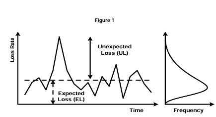
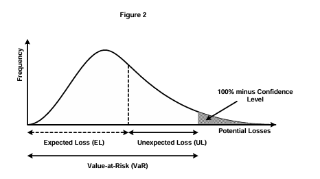

Mapa kapitału na bilansie
Ten sam bank co na Mapie banku, oglądany przez kapitał. Pozycje z kwotą na ciemniejszym tle biorą udział w liczeniu funduszy własnych albo RWA. Kliknij taką pozycję, aby zobaczyć szczegóły, a najedź na nią, aby zobaczyć jej drogę do współczynników.
Kapitał własny, obligacje AT1 i dług podporządkowany. Depozyty i zwykłe emisje kapitałem nie są – bank musi je oddać, więc nie pokryją strat.
CET1 pokrywa straty od razu i bez terminu. AT1 – gdy CET1 spadnie poniżej progu. Tier 2 – dopiero przy upadłości. Dlatego część wymogów i wszystkie bufory muszą być w CET1.
Odpisy ECL obniżają zysk, a zysk zatrzymany zasila CET1. Przychody tworzą wskaźnik biznesowy, a ten – RWA operacyjne. Aktywa nie są kapitałem, ale wyznaczają RWA.
Nota objaśniająca do funkcji wag ryzyka IRB
Dokładne tłumaczenie noty Komitetu Bazylejskiego z lipca 2005 r. – rozdział po rozdziale. Do każdego rozdziału plansza: o co chodzi, w skrócie i na rysunku.
2005
Tłumaczenie własne. W razie wątpliwości rozstrzyga tekst oryginalny.
Wprowadzenie
Introduction · oryginał s. 1W czerwcu 2004 r. Komitet Bazylejski opublikował Zrewidowane ramy dotyczące międzynarodowej konwergencji pomiaru kapitału i standardów kapitałowych (dalej „Zrewidowane ramy” lub Bazylea II).1 Ramy te będą stanowić podstawę krajowych prac legislacyjnych i procesów wdrożeniowych. Dokument z czerwca 2004 r. uwzględnia nowe zjawiska w pomiarze ryzyka bankowego i zarządzaniu nim w przypadku banków, które przechodzą na metodę „wewnętrznych ratingów” (IRB). W tej metodzie instytucje będą mogły wykorzystywać własne, wewnętrzne miary kluczowych czynników ryzyka kredytowego jako podstawowe dane wejściowe do wyliczenia kapitału – pod warunkiem spełnienia określonych warunków i uzyskania wyraźnej zgody nadzoru. Wszystkie instytucje stosujące metodę IRB będą mogły wyznaczać prawdopodobieństwa niewykonania zobowiązania (defaultu) kredytobiorców, natomiast te, które stosują zaawansowaną metodę IRB, będą mogły ponadto opierać się na własnych oszacowaniach straty w przypadku defaultu oraz ekspozycji w momencie defaultu, dla każdej ekspozycji z osobna. Te miary ryzyka są przekształcane w wagi ryzyka i regulacyjne wymogi kapitałowe za pomocą wzorów na wagi ryzyka określonych przez Komitet Bazylejski.
Niniejszy dokument skupia się wyłącznie na wyjaśnieniu wzorów na wagi ryzyka z Bazylei II w sposób nietechniczny – poprzez opis ich podstaw ekonomicznych oraz leżącego u ich podstaw modelu matematycznego i jego parametrów wejściowych. Z samej swojej natury oznacza to, że dokument nie może oddać pełnej głębi rozważań Komitetu Bazylejskiego prowadzonych przy opracowywaniu metody IRB. Do dalszej, bardziej technicznej lektury podano odniesienia do dokumentów źródłowych.
1 BCBS (2004).
In June 2004, the Basel Committee issued a Revised Framework on International Convergence of Capital Measurement and Capital Standards (hereinafter “Revised Framework” or Basel II).1 This framework will serve as the basis for national rulemaking and implementation processes. The June 2004 paper takes account of new developments in the measurement and management of banking risks for those banks that move onto the “internal ratings-based” (IRB) approach. In this approach, institutions will be allowed to use their own internal measures for key drivers of credit risk as primary inputs to the capital calculation, subject to meeting certain conditions and to explicit supervisory approval. All institutions using the IRB approach will be allowed to determine the borrowers’ probabilities of default while those using the advanced IRB approach will also be permitted to rely on own estimates of loss given default and exposure at default on an exposure-by-exposure basis. These risk measures are converted into risk weights and regulatory capital requirements by means of risk weight formulas specified by the Basel Committee.
This paper purely focuses on explaining the Basel II risk weight formulas in a non-technical way by describing the economic foundations as well as the underlying mathematical model and its input parameters. By its very nature this means that this document cannot describe the full depth of the Basel Committee’s thinking as it developed the IRB framework. For further, more technical reading, references to background papers are provided.
1 BCBS (2004).
Rozdział 1 w skrócie: czym jest ta nota i czego nie robi
LGD, EAD – tylko zaawansowana IRBpo spełnieniu warunków i za zgodą nadzoru
Bank nie bierze wagi z tabeli, tylko wkłada do wzoru własne oceny klientów. Podstawowa IRB: własne PD. Zaawansowana: także LGD i EAD, kredyt po kredycie.
Nietechniczne wyjaśnienie wzorów: skąd się wzięły (ekonomia), jaki model matematyczny za nimi stoi, co oznaczają parametry.
Sama zastrzega, że nie oddaje całej głębi rozważań Komitetu – po szczegóły techniczne odsyła do dokumentów źródłowych (rozdział 6).
Powiązanie z wystąpieniem: podział na podstawową i zaawansowaną IRB – plansza 3.0; wzór – plansze 2.1 i 3.1. Daty Bazylei I i wdrożenia w UE dopisane od nas, nie są w nocie.
Ekonomiczne podstawy wzorów na wagi ryzyka
Economic foundations of the risk weight formulas · oryginał s. 1W działalności kredytowej straty odsetek i kapitału (należności głównej) zdarzają się cały czas – zawsze znajdą się kredytobiorcy, którzy nie wywiązują się ze swoich zobowiązań. Straty faktycznie poniesione w danym roku różnią się z roku na rok, zależnie od liczby i dotkliwości zdarzeń defaultu, nawet jeśli założymy, że jakość portfela jest stała w czasie. Rysunek 1 pokazuje, jak zmienność zrealizowanych strat w czasie prowadzi do rozkładu strat banku:

Choć nigdy nie da się z góry poznać strat, jakie bank poniesie w danym roku, bank może prognozować średni poziom strat kredytowych, których może się zasadnie spodziewać. Straty te nazywa się stratami oczekiwanymi (Expected Losses, EL); na rysunku 1 pokazuje je linia przerywana. Instytucje finansowe traktują straty oczekiwane jako składnik kosztów prowadzenia działalności i zarządzają nimi na wiele sposobów, m.in. poprzez wycenę ekspozycji kredytowych i tworzenie rezerw.
Jedną z funkcji kapitału banku jest zapewnienie bufora chroniącego wierzycieli banku przed stratami szczytowymi, które przekraczają poziom oczekiwany. Takie szczyty ilustrują na rysunku 1 skoki powyżej linii przerywanej. Straty szczytowe nie występują co roku, ale gdy już wystąpią, mogą być bardzo duże. Straty powyżej poziomu oczekiwanego nazywa się zwykle stratami nieoczekiwanymi (Unexpected Losses, UL) – instytucje wiedzą, że od czasu do czasu wystąpią, ale nie mogą z góry znać ich momentu ani skali. Stopy procentowe, w tym premie za ryzyko, pobierane od ekspozycji kredytowych mogą pochłonąć część składników strat nieoczekiwanych, ale rynek nie zaakceptuje cen wystarczających do pokrycia wszystkich strat nieoczekiwanych. Kapitał jest potrzebny, aby pokryć ryzyko takich strat szczytowych, i dlatego pełni funkcję pokrywania strat.
Najgorszym przypadkiem, jaki można sobie wyobrazić, byłaby utrata przez bank całego portfela kredytowego w danym roku. Takie zdarzenie jest jednak wysoce nieprawdopodobne, a utrzymywanie kapitału na jego pokrycie byłoby ekonomicznie nieefektywne. Banki mają bodziec, by minimalizować utrzymywany kapitał, ponieważ jego ograniczenie uwalnia zasoby ekonomiczne, które można skierować na zyskowne inwestycje. Z drugiej strony, im mniej kapitału utrzymuje bank, tym większe prawdopodobieństwo, że nie będzie w stanie spłacić własnych zobowiązań dłużnych, tzn. że straty w danym roku nie zostaną pokryte zyskiem i dostępnym kapitałem, a bank stanie się niewypłacalny. Dlatego banki i ich nadzorcy muszą starannie wyważyć ryzyko i korzyści związane z utrzymywaniem kapitału.
Istnieje wiele podejść do ustalania, ile kapitału powinien utrzymywać bank. Metoda IRB przyjęta w Bazylei II koncentruje się na akceptowanej przez nadzorców częstości niewypłacalności banków2 wynikających ze strat kredytowych. Za pomocą stochastycznego modelu portfela kredytowego można oszacować wielkość straty, która zostanie przekroczona z małym, z góry określonym prawdopodobieństwem. Prawdopodobieństwo to można traktować jako prawdopodobieństwo niewypłacalności banku. Kapitał ustala się tak, aby straty nieoczekiwane przekroczyły ten poziom kapitału tylko z tym bardzo niskim, ustalonym prawdopodobieństwem. To podejście do ustalania kapitału ilustruje rysunek 2.

Krzywa na rysunku 2 opisuje prawdopodobieństwo strat o określonej wielkości. Pole pod całą krzywą jest równe 100% (tzn. jest to wykres gęstości prawdopodobieństwa). Krzywa pokazuje, że małe straty, w okolicy straty oczekiwanej lub nieco poniżej niej, występują częściej niż straty duże. Prawdopodobieństwo, że straty przekroczą sumę straty oczekiwanej (EL) i straty nieoczekiwanej (UL) – tj. prawdopodobieństwo, że bank nie będzie w stanie wywiązać się ze swoich zobowiązań kredytowych z zysku i kapitału – jest równe zakreskowanemu polu po prawej stronie krzywej. 100% minus to prawdopodobieństwo nazywa się poziomem ufności, a odpowiadający mu próg – wartością zagrożoną (Value-at-Risk, VaR) przy tym poziomie ufności. Jeśli kapitał ustali się na poziomie różnicy między EL a VaR i jeśli EL jest pokryta rezerwami lub przychodami, to prawdopodobieństwo, że bank pozostanie wypłacalny w horyzoncie jednego roku, jest równe poziomowi ufności. W Bazylei II kapitał ustala się tak, aby utrzymać nadzorczo ustalony stały poziom ufności.
Dotąd stratę oczekiwaną rozpatrywaliśmy z perspektywy odgórnej, tj. z punktu widzenia portfela. Można ją też rozpatrywać oddolnie, mianowicie od strony jej składników. Zakłada się, że strata oczekiwana portfela jest równa odsetkowi dłużników, którzy mogą nie wywiązać się z zobowiązań w danym przedziale czasu (1 rok w kontekście Bazylei), pomnożonemu przez niespłaconą ekspozycję w momencie defaultu i jeszcze raz pomnożonemu przez stopę straty w przypadku defaultu (tj. odsetek ekspozycji, który nie zostanie odzyskany ze sprzedaży zabezpieczeń itp.). Oczywiście banki nie będą znać z góry dokładnej liczby defaultów w danym roku, dokładnej kwoty zadłużenia ani faktycznej stopy straty; czynniki te są zmiennymi losowymi. Banki mogą jednak oszacować wartości średnie lub oczekiwane. Tym samym trzy wymienione wyżej czynniki odpowiadają parametrom ryzyka, na których zbudowana jest metoda IRB z Bazylei II:
- prawdopodobieństwo defaultu (PD) dla danej klasy ratingowej, które podaje średni odsetek dłużników z tej klasy ratingowej, którzy nie wywiążą się z zobowiązań w ciągu jednego roku;
- ekspozycja w momencie defaultu (EAD), która jest oszacowaniem kwoty zadłużenia (kwot wykorzystanych plus prawdopodobnych przyszłych wypłat z jeszcze niewykorzystanych linii) na wypadek defaultu kredytobiorcy;
- strata w przypadku defaultu (LGD), która podaje odsetek ekspozycji, jaki bank może stracić w przypadku defaultu kredytobiorcy. Straty te zwykle wyraża się jako odsetek EAD; zależą one m.in. od rodzaju i wartości zabezpieczenia, a także od rodzaju kredytobiorcy i oczekiwanych wpływów z windykacji aktywów.
Stratę oczekiwaną (w jednostkach waluty) można wówczas zapisać jako
lub – wyrażoną jako procent EAD – jako
2 Niewypłacalność rozumie się tu i w dalszej części w szerokim sensie. Obejmuje ona na przykład przypadek, w którym bank nie wywiązuje się ze swoich zobowiązań uprzywilejowanych (senior).
In the credit business, losses of interest and principal occur all the time - there are always some borrowers that default on their obligations. The losses that are actually experienced in a particular year vary from year to year, depending on the number and severity of default events, even if we assume that the quality of the portfolio is consistent over time. Figure 1 illustrates how variation in realised losses over time leads to a distribution of losses for a bank:
While it is never possible to know in advance the losses a bank will suffer in a particular year, a bank can forecast the average level of credit losses it can reasonably expect to experience. These losses are referred to as Expected Losses (EL) and are shown in Figure 1 by the dashed line. Financial institutions view Expected Losses as a cost component of doing business, and manage them by a number of means, including through the pricing of credit exposures and through provisioning.
One of the functions of bank capital is to provide a buffer to protect a bank’s debt holders against peak losses that exceed expected levels. Such peaks are illustrated by the spikes above the dashed line in Figure 1. Peak losses do not occur every year, but when they occur, they can potentially be very large. Losses above expected levels are usually referred to as Unexpected Losses (UL) - institutions know they will occur now and then, but they cannot know in advance their timing or severity. Interest rates, including risk premia, charged on credit exposures may absorb some components of unexpected losses, but the market will not support prices sufficient to cover all unexpected losses. Capital is needed to cover the risks of such peak losses, and therefore it has a loss-absorbing function.
The worst case one could imagine would be that banks lose their entire credit portfolio in a given year. This event, though, is highly unlikely, and holding capital against it would be economically inefficient. Banks have an incentive to minimise the capital they hold, because reducing capital frees up economic resources that can be directed to profitable investments. On the other hand, the less capital a bank holds, the greater is the likelihood that it will not be able to meet its own debt obligations, i.e. that losses in a given year will not be covered by profit plus available capital, and that the bank will become insolvent. Thus, banks and their supervisors must carefully balance the risks and rewards of holding capital.
There are a number of approaches to determining how much capital a bank should hold. The IRB approach adopted for Basel II focuses on the frequency of bank insolvencies2 arising from credit losses that supervisors are willing to accept. By means of a stochastic credit portfolio model, it is possible to estimate the amount of loss which will be exceeded with a small, pre-defined probability. This probability can be considered the probability of bank insolvency. Capital is set to ensure that unexpected losses will exceed this level of capital with only this very low, fixed probability. This approach to setting capital is illustrated in Figure 2.
The curve in Figure 2 describes the likelihood of losses of a certain magnitude. The area under the entire curve is equal to 100% (i.e. it is the graph of a probability density). The curve shows that small losses around or slightly below the Expected Loss occur more frequently than large losses. The likelihood that losses will exceed the sum of Expected Loss (EL) and Unexpected Loss (UL) - i.e. the likelihood that a bank will not be able to meet its own credit obligations by its profits and capital - equals the hatched area under the right hand side of the curve. 100% minus this likelihood is called the confidence level and the corresponding threshold is called Value-at-Risk (VaR) at this confidence level. If capital is set according to the gap between EL and VaR, and if EL is covered by provisions or revenues, then the likelihood that the bank will remain solvent over a one-year horizon is equal to the confidence level. Under Basel II, capital is set to maintain a supervisory fixed confidence level.
So far the Expected Loss has been regarded from a top-down perspective, i.e. from a portfolio view. It can also be viewed bottom-up, namely from its components. The Expected Loss of a portfolio is assumed to equal the proportion of obligors that might default within a given time frame (1 year in the Basel context), multiplied by the outstanding exposure at default, and once more multiplied by the loss given default rate (i.e. the percentage of exposure that will not be recovered by sale of collateral etc.). Of course, banks will not know in advance the exact number of defaults in a given year, nor the exact amount outstanding nor the actual loss rate; these factors are random variables. But banks can estimate average or expected figures. As such, the three factors mentioned above correspond to the risk parameters upon which the Basel II IRB approach is built:
- probability of default (PD) per rating grade, which gives the average percentage of obligors that default in this rating grade in the course of one year
- exposure at default (EAD), which gives an estimate of the amount outstanding (drawn amounts plus likely future drawdowns of yet undrawn lines) in case the borrower defaults
- loss given default (LGD), which gives the percentage of exposure the bank might lose in case the borrower defaults. These losses are usually shown as a percentage of EAD, and depend, amongst others, on the type and amount of collateral as well as the type of borrower and the expected proceeds from the work-out of the assets.
The Expected Loss (in currency amounts) can then be written as
or, if expressed as a percentage figure of the EAD, as
2 Insolvency here and in the following is understood in a broad sense. This includes, for instance, the case of the bank failing to meet its senior obligations.
Rozdział 2 w skrócie: odpisy na średnią, kapitał na szczyty – do ustalonego poziomu ufności
Straty odsetek i kapitału to normalna część kredytowania. Nawet przy stałej jakości portfela liczba i dotkliwość defaultów zmienia się z roku na rok.
Średni poziom strat, którego bank może się rozsądnie spodziewać. Traktuje go jak koszt prowadzenia działalności: wlicza w cenę kredytu i tworzy rezerwy (odpisy).
Nie co roku, ale gdy przychodzą – bywają bardzo duże; nie wiadomo kiedy ani jak duże. Marża pokryje tylko część – rynek nie zapłaci ceny na wszystko. Resztę musi pokryć kapitał, chroniąc wierzycieli banku.
Możliwe w teorii, ale wysoce nieprawdopodobne. Trzymanie kapitału na taki przypadek – ekonomicznie nieefektywne: kapitał nie pracuje w zyskownych inwestycjach.
Rośnie szansa, że bank nie spłaci własnych długów i stanie się niewypłacalny. Banki i nadzorcy muszą wyważyć ryzyko i korzyści.
Pole pod całą krzywą = 100%. Małe straty, w okolicy EL i nieco poniżej, są częstsze niż duże.
Zakreskowane pole po prawej to szansa, że strata przekroczy EL + UL, czyli zysk i kapitał. 100% minus to pole = poziom ufności.
Próg straty odpowiadający poziomowi ufności – wartość zagrożona. W Bazylei II poziom ufności jest stały, ustalony przez nadzorcę (99,9% – rozdział 5.1).
Jeśli EL pokrywają odpisy lub przychody, a kapitał wypełnia lukę do VaR, to szansa, że bank przetrwa rok, jest równa poziomowi ufności.
w % EAD: PD × LGD
np. 1% × 10 mln × 40% = 40 tys. zł
Liczby dokładnej nikt nie zna z góry – PD, EAD i LGD to zmienne losowe. Bank szacuje ich wartości średnie (oczekiwane). Na tych trzech parametrach zbudowana jest cała metoda IRB – rozdział 3 pokazuje, że wystarczą też do kapitału.
Rysunki własne według idei rysunków 1 i 2 z noty. Rysunek 1: seria lat ilustracyjna, średnia = EL. Rysunek 2: rozkład z modelu ASRF dla portfela słabszych firm – przy takim portfelu krzywa ma „garb” jak w oryginale; dla dobrych klientów garb przesuwa się prawie do zera (plansza 2.4). Oryginalne rysunki – w zakładkach „Oryginalny tekst” i „Tłumaczenie”.
Wymogi regulacyjne wobec bazylejskiego modelu ryzyka kredytowego
Regulatory requirements to the Basel credit risk model · oryginał s. 4Bazylejskie funkcje wag ryzyka służące do wyznaczania nadzorczych wymogów kapitałowych na straty nieoczekiwane (UL) opierają się na konkretnym modelu opracowanym przez Bazylejski Komitet Nadzoru Bankowego (por. Gordy, 2003). Specyfikacja modelu podlegała ważnemu ograniczeniu, aby odpowiadała potrzebom nadzorczym:
Model powinien być niezmienniczy względem portfela (portfolio invariant), tzn. kapitał wymagany dla danego kredytu powinien zależeć wyłącznie od ryzyka tego kredytu i nie może zależeć od portfela, do którego kredyt jest dodawany. Tę cechę uznano za kluczową, aby nowe ramy IRB dało się stosować w szerszym gronie krajów i instytucji. Uwzględnianie faktycznego składu portfela przy ustalaniu kapitału dla każdego kredytu – jak robi się to w bardziej zaawansowanych modelach portfela kredytowego – byłoby zadaniem zbyt złożonym dla większości banków i nadzorców. Dążenie do niezmienniczości względem portfela utrudnia jednak uwzględnienie w ramach efektów dywersyfikacji specyficznych dla danej instytucji: efekty dywersyfikacji zależałyby od tego, jak dobrze nowy kredyt pasuje do istniejącego portfela. W rezultacie Zrewidowane ramy skalibrowano dla dobrze zdywersyfikowanych banków. Jeśli bank odbiega od tego ideału, oczekuje się, że zajmie się tym w ramach Filaru 2. Jeśli tego nie zrobi, nadzorcy musieliby podjąć działania w ramach procesu przeglądu nadzorczego (Filar 2).
W kontekście regulacyjnej alokacji kapitału schematy alokacji niezmiennicze względem portfela nazywa się także opartymi na ratingach (ratings-based). Określenie to wynika z faktu, że przy niezmienniczości względem portfela do ustalenia obciążeń kapitałowych instrumentów kredytowych wystarczają cechy specyficzne dla dłużnika, takie jak prawdopodobieństwo defaultu, strata w przypadku defaultu i ekspozycja w momencie defaultu. Jeśli banki stosują taki typ modelu, używają dokładnie tych samych parametrów ryzyka dla EL i UL, mianowicie PD, LGD i EAD.
Koniec przesłanego fragmentu rozdziału 3. Jeśli rozdział ma dalszy ciąg na następnej stronie – do uzupełnienia.
The Basel risk weight functions used for the derivation of supervisory capital charges for Unexpected Losses (UL) are based on a specific model developed by the Basel Committee on Banking Supervision (cf. Gordy, 2003). The model specification was subject to an important restriction in order to fit supervisory needs:
The model should be portfolio invariant, i.e. the capital required for any given loan should only depend on the risk of that loan and must not depend on the portfolio it is added to. This characteristic has been deemed vital in order to make the new IRB framework applicable to a wider range of countries and institutions. Taking into account the actual portfolio composition when determining capital for each loan - as is done in more advanced credit portfolio models - would have been a too complex task for most banks and supervisors alike. The desire for portfolio invariance, however, makes recognition of institution-specific diversification effects within the framework difficult: diversification effects would depend on how well a new loan fits into an existing portfolio. As a result the Revised Framework was calibrated to well diversified banks. Where a bank deviates from this ideal it is expected to address this under Pillar 2 of the framework. If a bank failed at this, supervisors would have to take action under the supervisory review process (pillar 2).
In the context of regulatory capital allocation, portfolio invariant allocation schemes are also called ratings-based. This notion stems from the fact that, by portfolio invariance, obligor-specific attributes like probability of default, loss given default and exposure at default suffice to determine the capital charges of credit instruments. If banks apply exactly this model type they use exactly the same risk parameters for EL and UL, namely PD, LGD and EAD.
Rozdział 3 w skrócie: kapitał kredytu nie może zależeć od portfela, do którego trafia
Kapitał zależy od portfela: w banku A więcej (kredyt dokłada do koncentracji), w banku B mniej (dywersyfikacja).
Kapitał taki sam w obu bankach – liczy się tylko ryzyko kredytu: PD, LGD, EAD (i M).
Bez dywersyfikacji specyficznej dla banku. Wzór skalibrowano dla dobrze zdywersyfikowanego banku – stąd litera A (asymptotyczny) w ASRF.
Koncentracje (branżowe, na dużych klientach) – bank ma je ująć sam w Filarze 2, czyli w ICAAP. Jeśli nie – działa nadzorca w procesie przeglądu (BION/SREP).
PD, LGD i EAD z rozdziału 2 wystarczą do wyliczenia i straty oczekiwanej, i kapitału na nieoczekiwaną. Nie trzeba znać reszty portfela.
Kwota 0,66 mln zł – nasz kredyt z części 3 wystąpienia (plansza 3.1). Gordy (2003) pokazał, że taka niezmienniczość jest możliwa tylko przy jednym czynniku ryzyka systemowego i portfelu z nieskończenie wielu drobnych kredytów – to założenia modelu ASRF (rozdział 4.1). Uwaga o Gordym i BION/SREP – nasze, nie z noty.
Specyfikacja modelu
Model specification · oryginał s. 4Model ASRF
The ASRF framework · oryginał s. 4W procesie specyfikacji modelu Bazylei II okazało się, że niezmienniczość wymogów kapitałowych względem portfela jest własnością silnie wpływającą na strukturę modelu portfelowego. Można wykazać, że w zasadzie jedynie tak zwane modele asymptotycznego pojedynczego czynnika ryzyka (Asymptotic Single Risk Factor, ASRF) są niezmiennicze względem portfela (Gordy, 2003). Modele ASRF wywodzi się ze „zwykłych” modeli portfela kredytowego za pomocą prawa wielkich liczb. Gdy portfel składa się z dużej liczby stosunkowo małych ekspozycji, ryzyka idiosynkratyczne związane z poszczególnymi ekspozycjami mają tendencję do wzajemnego znoszenia się, a istotny wpływ na straty portfela mają tylko ryzyka systematyczne, które dotykają wielu ekspozycji. W modelu ASRF wszystkie ryzyka systematyczne (ogólnosystemowe), które w pewnym stopniu dotykają wszystkich kredytobiorców – takie jak ryzyka branżowe czy regionalne – modeluje się za pomocą tylko jednego („pojedynczego”) systematycznego czynnika ryzyka.
Należy zauważyć, że wybór modelu ASRF do zastosowania w bazylejskich funkcjach wag ryzyka w żaden sposób nie wyraża preferencji Komitetu Bazylejskiego dla jednego modelu nad innymi. Wybór ten był podyktowany wyłącznie powyższymi względami. Zachęca się banki do stosowania takich modeli ryzyka kredytowego, które najlepiej odpowiadają ich wewnętrznym potrzebom w zakresie pomiaru ryzyka i zarządzania ryzykiem.
W ramach modelu ASRF można oszacować sumę strat oczekiwanych i nieoczekiwanych związanych z każdą ekspozycją kredytową. Osiąga się to przez wyliczenie warunkowej straty oczekiwanej dla ekspozycji przy odpowiednio ostrożnej wartości pojedynczego systematycznego czynnika ryzyka. W konkretnej implementacji modelu ASRF przyjętej w Bazylei II warunkową stratę oczekiwaną dla ekspozycji wyraża się jako iloczyn prawdopodobieństwa defaultu (PD), opisującego prawdopodobieństwo, że dłużnik nie wywiąże się z zobowiązań, oraz parametru straty w przypadku defaultu (LGD), opisującego stopę straty na ekspozycji w razie defaultu.
Implementacja modelu ASRF opracowana dla Bazylei II wykorzystuje średnie PD, które odzwierciedlają oczekiwane stopy defaultu w normalnych warunkach prowadzenia działalności. Te średnie PD szacują banki. Aby wyliczyć warunkową stratę oczekiwaną, zgłaszane przez banki średnie PD przekształca się w warunkowe PD za pomocą nadzorczej funkcji odwzorowującej (opisanej niżej). Warunkowe PD odzwierciedlają stopy defaultu przy odpowiednio ostrożnej wartości systematycznego czynnika ryzyka. Ta sama wartość systematycznego czynnika ryzyka jest stosowana dla wszystkich instrumentów w portfelu. Aspekty dywersyfikacji lub koncentracji faktycznego portfela nie są w modelu ASRF szczególnie uwzględniane.
W przeciwieństwie do traktowania PD Bazylea II nie zawiera jawnej funkcji, która przekształcałaby średnie LGD, oczekiwane w normalnych warunkach prowadzenia działalności, w warunkowe LGD spójne z odpowiednio ostrożną wartością systematycznego czynnika ryzyka. Zamiast tego od banków wymaga się zgłaszania LGD odzwierciedlających warunki dekoniunktury gospodarczej tam, gdzie dotkliwość strat w okresach cyklicznych spowolnień ma być wyższa niż w typowych warunkach prowadzenia działalności.
Warunkową stratę oczekiwaną dla ekspozycji szacuje się jako iloczyn warunkowego PD i LGD z okresu dekoniunktury („downturn”) dla tej ekspozycji. W modelu ASRF łączne zasoby ekonomiczne (kapitał plus rezerwy i odpisy), które bank musi utrzymywać na pokrycie sumy UL i EL dla ekspozycji, są równe warunkowej stracie oczekiwanej tej ekspozycji. Zsumowanie tych zasobów dla wszystkich ekspozycji daje zasoby wystarczające do osiągnięcia docelowej wartości zagrożonej (VaR) dla całego portfela.
In the specification process of the Basel II model, it turned out that portfolio invariance of the capital requirements is a property with a strong influence on the structure of the portfolio model. It can be shown that essentially only so-called Asymptotic Single Risk Factor (ASRF) models are portfolio invariant (Gordy, 2003). ASRF models are derived from “ordinary” credit portfolio models by the law of large numbers. When a portfolio consists of a large number of relatively small exposures, idiosyncratic risks associated with individual exposures tend to cancel out one-another and only systematic risks that affect many exposures have a material effect on portfolio losses. In the ASRF model, all systematic (or system-wide) risks, that affect all borrowers to a certain degree, like industry or regional risks, are modelled with only one (the “single”) systematic risk factor.
It should be noted that the choice of the ASRF for use in the Basel risk weight functions does by no means express any preference of the Basel Committee towards one model over others. Rather, the choice was entirely driven by above considerations. Banks are encouraged to use whatever credit risk models fit best for their internal risk measurement and risk management needs.
Given the ASRF framework, it is possible to estimate the sum of the expected and unexpected losses associated with each credit exposure. This is accomplished by calculating the conditional expected loss for an exposure given an appropriately conservative value of the single systematic risk factor. Under the particular implementation of the ASRF model adopted for Basel II, the conditional expected loss for an exposure is expressed as a product of a probability of default (PD), which describes the likelihood that an obligor will default, and a loss-given-default (LGD) parameter, which describes the loss rate on the exposure in the event of default.
The implementation of the ASRF model developed for Basel II makes use of average PDs that reflect expected default rates under normal business conditions. These average PDs are estimated by banks. To calculate the conditional expected loss, bank-reported average PDs are transformed into conditional PDs using a supervisory mapping function (described below). The conditional PDs reflect default rates given an appropriately conservative value of the systematic risk factor. The same value of the systematic risk factor is used for all instruments in the portfolio. Diversification or concentration aspects of an actual portfolio are not specifically treated within an ASRF model.
In contrast to the treatment of PDs, Basel II does not contain an explicit function that transforms average LGDs expected to occur under normal business conditions into conditional LGDs consistent with an appropriately conservative value of the systematic risk factor. Instead, banks are asked to report LGDs that reflect economic-downturn conditions in circumstances where loss severities are expected to be higher during cyclical downturns than during typical business conditions.
The conditional expected loss for an exposure is estimated as the product of the conditional PD and the “downturn” LGD for that exposure. Under the ASRF model the total economic resources (capital plus provisions and write-offs) that a bank must hold to cover the sum of UL and EL for an exposure is equal to that exposure’s conditional expected loss. Adding up these resources across all exposures yields sufficient resources to meet a portfolio-wide Value-at-Risk target.
Rozdział 4.1 w skrócie: dlaczego ASRF i jak z niego wychodzi kapitał
Ryzyka pojedynczych klientów się znoszą (prawo wielkich liczb). Zostaje tylko to, co dotyka wielu naraz.
Wszystkie ryzyka wspólne – gospodarka, branże, regiony – zebrane w jedną zmienną.
Ustawiony na odpowiednio ostrożną wartość – tę samą dla wszystkich kredytów.
Kapitał na kredyt ma zależeć tylko od tego kredytu – jego PD, LGD, EAD i M. Wtedy bank liczy kapitał kredyt po kredycie i po prostu sumuje, a ten sam kredyt kosztuje tyle samo kapitału w każdym banku.
Ryzyko, które dokłada kredyt, zależy od tego, z kim się razem psuje. Kredyt dla firmy budowlanej w banku pełnym kredytów budowlanych dokłada dużo ryzyka – w banku zdywersyfikowanym mało. Kapitał zależy więc od reszty portfela.
ten sam kredyt, różny kapitał – brak niezmienniczości
ten sam kredyt, ten sam kapitał – niezmienniczość
Wszystkie kredyty zależą od tej samej zmiennej Z. Wtedy to, jak kredyt „psuje się razem” z resztą, opisuje jedna liczba – jego własne R – zamiast tablicy korelacji między branżami.
W praktyce łamie go koncentracja branżowa i regionalna.Żaden kredyt nie jest tak duży, żeby jego własne, indywidualne ryzyko miało znaczenie dla całego portfela. Strata portfela w danym roku zależy tylko od Z.
W praktyce łamie go koncentracja na dużych klientach.Gdy oba warunki są spełnione, VaR portfela = suma warunkowych strat oczekiwanych pojedynczych kredytów. Gdy nie są – wzór Filaru 1 nie widzi ryzyka koncentracji i bank musi je ująć sam w Filarze 2 (ICAAP).
Przykład z bankami A i B oraz przypisanie warunków do rodzajów koncentracji – nasza ilustracja; sam wynik Gordy'ego (2003) przywołuje nota.
Przy 10 kredytach w złym roku może zdefaultować od 0% do 30% – los zależy od pojedynczych klientów. Przy 10 000 – praktycznie dokładnie 14%. Tak „A” zamienia prawdopodobieństwo w pewny odsetek strat. Rachunek własny (rozkład dwumianowy).
np. 1%
1% → 14,0%
np. 40%
= odpisy 0,4% + kapitał 5,2%
Suma tych zasobów po wszystkich kredytach = VaR całego portfela. Dlatego kapitał można liczyć kredyt po kredycie i po prostu dodać. Korekta za zapadalność – rozdział 4.6.
PD średnie przelicza wzór nadzorcy. Dla LGD takiej funkcji nie ma – bank podaje od razu LGD z dekoniunktury. Stąd dwa różne „złe lata” (wystąpienie, plansza 2.7).
Model ASRF ich nie uwzględnia – każdy kredyt dostaje ten sam stan gospodarki. Faktyczny portfel banku nie ma znaczenia.
Komitet podkreśla: ASRF nie jest jego preferencją, tylko konsekwencją niezmienniczości. Banki mają wewnętrznie używać modeli, które im najlepiej pasują – to miejsce ICAAP.
PD średnie i warunkowe
Average and conditional PDs · oryginał s. 5Strata przy defaulcie (LGD)
Loss Given Default · oryginał s. 6Straty oczekiwane a nieoczekiwane
Expected versus Unexpected Losses · oryginał s. 7Korelacje aktywów
Asset correlations · oryginał s. 8Korekty za zapadalność
Maturity adjustments · oryginał s. 9Ekspozycja w momencie defaultu i aktywa ważone ryzykiem
Exposure at Default and risk weighted assets · oryginał s. 11Kalibracja modelu
Calibration of the model · oryginał s. 11Poziom ufności
Confidence level · oryginał s. 11Nadzorcze oszacowania korelacji aktywów dla ekspozycji wobec przedsiębiorstw, banków i państw
Supervisory estimates of asset correlations for corporate, bank and sovereign exposures · oryginał s. 12Specyfikacja krzywych wag ryzyka dla detalu
Specification of the retail risk weight curves · oryginał s. 14Bibliografia
References · oryginał s. 15Sekurytyzacja dwa warianty
Ten sam bank co na Mapie kapitału. Sekurytyzacja przenosi ryzyko wybranego portfela kredytów na inwestorów. W wariancie tradycyjnym bank sprzedaje kredyty, w syntetycznym zostawia je u siebie i kupuje ochronę przed stratą. Pokazujemy tylko to, co się zmienia – w tych samych kolumnach i kolorach co na mapie. Liczby w wariancie IRB.
Sekurytyzacja tradycyjna
Bank sprzedaje portfel kredytów konsumpcyjnych spółce celowej, a ta finansuje zakup emisją obligacji.
Wstęp – gdzie i po co
Klasyczna forma: kredyty prawnie przechodzą na spółkę celową (SPV), a inwestorzy kupują jej obligacje.Portfele detaliczne z tysiącami podobnych kredytów: konsumpcyjne, samochodowe, leasing, karty, hipoteki (RMBS – duży rynek m.in. w Holandii, Hiszpanii, Wielkiej Brytanii). Banki i firmy leasingowe.
Rynek mały: pojedyncze transakcje na kredytach konsumpcyjnych i leasingu. Najczęściej w formie tradycyjnej sprzedaje się portfele NPL – do funduszy sekurytyzacyjnych.
Trzy cele naraz: finansowanie (bank dostaje gotówkę), ulga kapitałowa (mniej RWA) i krótszy bilans. Dla banków bez taniej bazy depozytowej – przede wszystkim finansowanie.
Fundusze, ubezpieczyciele, banki. Transakcje proste i przejrzyste mogą mieć znak STS (Simple, Transparent, Standardised) – wtedy niższe wagi dla inwestorów i dla banku.
Opis rynku – z pamięci, ogólnie; do weryfikacji przed cytowaniem.
Co bierzemy
Kredyty konsumpcyjne bez defaultu – część bloczka „Kredyty dla klientów” z kolumny Aktywa.BilansAktywa
- kredyty hipoteczne28,98
- karty kredytowe3,45
- kredyty konsumpcyjne – bez defaultusprzedajemy4,14
- kredyty konsumpcyjne – w defaulciezostają w banku0,90
- kredyty dla MŚP6,63
- kredyty dla firm7,90
| portfel do sprzedaży | |
|---|---|
| saldo brutto | 4,14 |
| odpisy ECL (koszyki 1 i 2) | −0,14 |
| wartość bilansowa netto = cena sprzedaży | 4,00 |
| PD · LGD | 7,00% · 45% |
| RWA (A-IRB, waga 69,3%) | 2,87 |
| kapitał B = RWA × 14,5% | 0,42 |
| RAROC produktu – kredyty konsumpcyjne | 7,3% |
Wysoka waga (69%) przy niskim RAROC (7,3% – poniżej kosztu kapitału 12%): dużo kapitału, mało zysku. Sprzedaż zwalnia kapitał tam, gdzie pracuje najgorzej.
Tysiące małych, podobnych kredytów z długą historią spłat – inwestor może ocenić stratę statystycznie. Takie portfele (consumer ABS) to najczęstszy przedmiot sekurytyzacji tradycyjnej w Polsce.
Kredytów w defaulcie (0,90) – ten portfel sprzedaje się osobno, w transakcji NPL. Hipotek – w IRB mają niską wagę (24,5%), więc dałyby mało ulgi kapitałowej.
Co się robi
Bank sprzedaje portfel spółce celowej (SPV), SPV płaci za niego pieniędzmi od inwestorów, którzy kupują jej obligacje – w transzach o różnym ryzyku.Prawna sprzedaż wierzytelności – kredyty wychodzą z bilansu banku. Gdyby bank upadł, SPV i inwestorzy zachowują portfel.
Bank musi zatrzymać min. 5% ryzyka (rozporządzenie UE 2017/2402, art. 6). Wybieramy pionowo: 5% każdej transzy = 0,20. Bank traci tyle samo co inwestorzy – ma powód dobrze obsługiwać portfel.
Ulga kapitałowa tylko gdy nadzorca uzna, że ryzyko naprawdę przeszło na inwestorów (CRR art. 244 – SRT). Bez tego bank liczy RWA tak, jakby portfel został.
3,80 bank przeznacza na spłatę zobowiązań wobec banków (najdroższe finansowanie). Bilans się skraca. Bank zostaje serwisantem i dostaje opłatę za obsługę.
Efekt
Te same cztery kolumny co na mapie – tylko pozycje, które się zmieniają: przed → po.BilansAktywa
Rachunek zysków i stratWynik
BilansPasywa
Kapitał i wymogi (CRR)Kapitał
| wskaźnik | przed | po | zmiana | dlaczego |
|---|---|---|---|---|
| CET1 ratio | 16,5% | 17,7% | +1,2 pp | ten sam CET1 6,32, mniejsze RWA 35,64 |
| TCR – łączny współczynnik | 19,9% | 21,3% | +1,4 pp | fundusze 7,60 ÷ 35,64 |
| Zapas nad MDA | 2,74 mld zł | 2,99 mld zł | +0,25 | (17,7% − 9,34%) × 35,64 |
| LR – dźwignia | 9,5% | 10,1% | +0,6 pp | Tier 1 6,70 ÷ ekspozycja 66,60 (krótszy bilans) |
| IC / AFR – wykorzystanie kapitału wewnętrznego | 61,2% | 58,0% | −3,2 pp | kapitał wewnętrzny 4,65 → 4,41 (mniej ryzyka kredytowego) |
| Budżet ryzyka kredytowego | 86% | 78% | −8 pp | pomiar 3,10 → 2,81 przy przydziale 3,60 – miejsce na wzrost z planu |
| RAROC banku | 16,8% | 17,5% | +0,7 pp | zysk 0,92 ÷ kapitał max(A; B) 5,27 |
| EVA – zysk ekonomiczny | +0,27 | +0,29 | +0,02 | zwolniony kapitał × 12% (0,05) > utracony zysk (0,03) |
| LDR – kredyty ÷ depozyty | 98,8% | 90,6% | −8,2 pp | mniej kredytów na tych samych depozytach – więcej płynności |
| NPL ratio | 9,3% | 10,2% | +0,9 pp | sprzedaliśmy tylko dobre kredyty: default 4,86 zostaje, a mianownik spada do 47,86 – przekroczony poziom ostrzegawczy 10% |
| ROE | 12,8% | 12,4% | −0,4 pp | mniejszy zysk przy tym samym kapitale własnym – poprawi się, gdy zwolniony kapitał pójdzie na nowy biznes albo dywidendę |
Kapitał: +1,2 pp CET1, 0,38 zwolnionego wymogu, budżet kredytowy z 86% na 78% – bank może zrealizować plan wzrostu bez zmiany apetytu. Rentowność: wychodzi produkt z RAROC 7,3%, więc RAROC banku rośnie. Płynność: krótszy bilans, mniej finansowania z rynku międzybankowego.
NPL rośnie do 10,2% – za próg ostrzegawczy. Dlatego taką transakcję łączy się ze sprzedażą portfela NPL. Zysk spada o 0,03 rocznie – opłaca się tylko, gdy zwolniony kapitał zarobi więcej niż 12%. Koszty strukturyzacji, ratingu i prawników.
SRT – zgoda nadzorcy na istotny transfer ryzyka. Retencja pionowa: gdyby bank zatrzymał całą transzę C (pierwszą stratę), jej RWA = 0,20 × 1250% = 2,50 – ulga prawie znika. Cena: inwestorzy muszą zapłacić wartość netto – przy wyższym oczekiwanym kuponie sprzedaż ze stratą obniża CET1.
Liczby orientacyjne, wariant IRB. Wagi transz (metoda SEC-IRBA: A ok. 15%, C 1250%) – z pamięci, do weryfikacji. Podział transz 85/10/5 przykładowy. RWA operacyjne bez zmian (spadek BI pominięty). Kapitał wewnętrzny portfela – szacunek z macierzy linie × ryzyka.
Sekurytyzacja syntetyczna
Kredyty zostają w banku. Bank kupuje od inwestora (tu: gwaranta) ochronę przed stratą z wybranej transzy portfela kredytów dla firm i płaci za nią premię.
Wstęp – gdzie i po co
Ryzyko przechodzi na inwestora umową – gwarancją finansową albo obligacjami powiązanymi z kredytem (CLN). Własność kredytów się nie zmienia.Portfele korporacyjne i MŚP – tam, gdzie bank chce zachować relację z klientem i nie może (albo nie chce) sprzedać kredytów. Głównie duże banki europejskie stosujące IRB.
Najczęstsza forma sekurytyzacji w ostatnich latach – transakcje SRT polskich banków, często z gwarancją EFI/EBI (Europejski Fundusz Inwestycyjny), połączone z obowiązkiem nowych kredytów dla MŚP.
Tylko ulga kapitałowa – bank nie dostaje gotówki, bilans się nie zmienia. Zwolniony kapitał idzie na nowe kredyty albo poprawia współczynniki.
Niefinansowana – gwarancja (EFI/EBI, ubezpieczyciel); waga gwaranta zastępuje wagę transzy. Finansowana – inwestor kupuje CLN i wpłaca gotówkę jako zabezpieczenie. Od 2021 r. syntetyczna też może mieć znak STS.
Opis rynku – z pamięci, ogólnie; do weryfikacji przed cytowaniem.
Co bierzemy
Kredyty dla firm bez defaultu – produkt z linii Korporacje, która ma RAROC poniżej kosztu kapitału.BilansAktywa
- kredyty hipoteczne28,98
- karty kredytowe3,45
- kredyty konsumpcyjne5,04
- kredyty dla MŚP6,63
- kredyty dla firm – bez defaultuportfel referencyjny – zostaje w bilansie6,80
- kredyty dla firm – w defaulciepoza transakcją1,10
| portfel referencyjny | |
|---|---|
| ekspozycja (EAD) | 6,80 |
| w tym firmy z ratingiem A · bez ratingu | 4,02 · 2,78 |
| PD · LGD | 0,15% i 3,00% · 40% (F-IRB) |
| strata oczekiwana EL | 0,036 (0,5% portfela) |
| RWA (F-IRB: 1,34 + 3,17) | 4,51 |
| kapitał B = RWA × 14,5% | 0,65 |
| RAROC linii Korporacje (max) | 10,3% |
Duże RWA (waga firm bez ratingu 114%) i linia poniżej kosztu kapitału. Syntetyka obniża kapitał bez sprzedaży kredytów – bank zachowuje klientów i marżę.
Kredyty korporacyjne trudno sprzedać: umowy, tajemnica bankowa, relacja z klientem. W syntetyce klient nie wie o transakcji – nic się dla niego nie zmienia.
Kredytów w defaulcie (1,10) – ochrona dotyczy przyszłych strat. Hipotek – w IRB niska waga, mała ulga.
Co się robi
Portfel dzieli się na transze według kolejności ponoszenia strat. Bank zatrzymuje pierwszą stratę i transzę uprzywilejowaną, a stratę ze środkowej transzy przejmuje gwarant – za premię.Skala transz: wykres nie w proporcji – transza A jest ok. 60 razy większa od C.
Bez sprzedaży – aktywa, pasywa i relacja z klientem bez zmian. Zmienia się tylko to, kto ponosi straty.
Bank zatrzymuje pierwszą stratę (C) i senior (A) – to więcej niż wymagane 5% ryzyka. Ma pełny powód, by dobrze oceniać i monitorować kredyty.
Ulga tylko po uznaniu SRT przez nadzorcę (CRR art. 245): transza B musi przejąć istotną część strat nieoczekiwanych.
Premia 7% rocznie od 0,51 = 0,036 – tak jak odsetki, płacona co roku, przez cały okres transakcji (zwykle kilka lat).
Efekt
Te same cztery kolumny co na mapie – w syntetyce bilans się nie zmienia, zmienia się kapitał.BilansAktywa
Rachunek zysków i stratWynik
BilansPasywa
Kapitał i wymogi (CRR)Kapitał
| wskaźnik | przed | po – syntetyczna | zmiana | dlaczego | tradycyjna |
|---|---|---|---|---|---|
| CET1 ratio | 16,5% | 17,6% | +1,1 pp | CET1 6,32 ÷ RWA 35,93 | 17,7% |
| TCR – łączny współczynnik | 19,9% | 21,2% | +1,3 pp | fundusze 7,60 ÷ 35,93 | 21,3% |
| Zapas nad MDA | 2,74 mld zł | 2,96 mld zł | +0,22 | (17,6% − 9,34%) × 35,93 | 2,99 |
| LR – dźwignia | 9,5% | 9,5% | 0 | ekspozycja bez zmian – kredyty zostają w bilansie | 10,1% |
| IC / AFR – wykorzystanie kapitału wewnętrznego | 61,2% | 57,9% | −3,3 pp | kapitał wewnętrzny 4,65 → 4,40 – mniej ryzyka kredytowego i koncentracji | 58,0% |
| Budżet ryzyka kredytowego | 86% | 79% | −7 pp | pomiar 3,10 → 2,83 przy przydziale 3,60 | 78% |
| RAROC linii Korporacje | 10,3% | 10,8% | +0,5 pp | zysk 0,13 → 0,10, kapitał max(A; B) 1,27 → 0,93 – nadal poniżej 12%: syntetyka pomaga, ale nie zastąpi zmiany cen | – |
| RAROC banku | 16,8% | 17,3% | +0,5 pp | zysk 0,92 ÷ kapitał max(A; B) 5,31 | 17,5% |
| EVA – zysk ekonomiczny | +0,27 | +0,28 | +0,01 | zwolniony kapitał × 12% (0,041) > premia po podatku (0,029) | +0,29 |
| NPL ratio | 9,3% | 9,3% | 0 | portfel zostaje w bilansie – mianownik się nie zmienia | 10,2% |
| LDR – kredyty ÷ depozyty | 98,8% | 98,8% | 0 | bez finansowania – gotówki nie ma | 90,6% |
| ROE | 12,8% | 12,4% | −0,4 pp | premia obniża zysk; poprawi się, gdy zwolniony kapitał pójdzie na nowe kredyty | 12,4% |
Kapitał: +1,1 pp CET1 i 0,34 zwolnionego wymogu – bez sprzedaży kredytów i bez utraty klientów. Budżet kredytowy z 86% na 79%. NPL i bilans bez zmian – inaczej niż w tradycyjnej, wskaźnik NPL nie rośnie.
Dźwignia i płynność – bez zmian, bo nie ma sprzedaży ani gotówki. Zysk niższy o premię 0,03 rocznie. Linia Korporacje zostaje poniżej kosztu kapitału – syntetyka kupuje czas, ale problemem są ceny.
Gdy premia jest niższa niż koszt zwolnionego kapitału: 12% × 0,34 = 0,041 po podatku, czyli premia do ok. 0,05 rocznie przed podatkiem (ok. 9,7% od transzy). Przy 7% korzyść jest mała – sens daje dopiero nowy biznes na zwolnionym kapitale. Warunek: SRT uznany przez nadzorcę.
| tradycyjna | syntetyczna | |
|---|---|---|
| kredyty | sprzedane do SPV – wychodzą z bilansu | zostają w banku |
| gotówka | tak – finansowanie | nie (przy gwarancji) |
| ulga kapitałowa | tak | tak – główny cel |
| dźwignia, płynność, LDR | poprawa | bez zmian |
| NPL ratio | rośnie, gdy sprzedaje się dobre kredyty | bez zmian |
| relacja z klientem | bank zostaje serwisantem | bez zmian – klient nie wie |
| koszt | utracona marża portfela, koszty emisji | premia za ochronę co roku |
| typowe portfele | detal: konsumpcyjne, leasing, hipoteki, NPL | firmy i MŚP |
Liczby orientacyjne, wariant IRB. Wagi po transakcji (metoda SEC-IRBA: senior ok. 15%, pierwsza strata 1250%; gwarant EFI 0%) – z pamięci, do weryfikacji. Granice transz 1,5% i 9% oraz premia 7% – przykładowe. Kapitał wewnętrzny portfela – szacunek z macierzy linie × ryzyka.